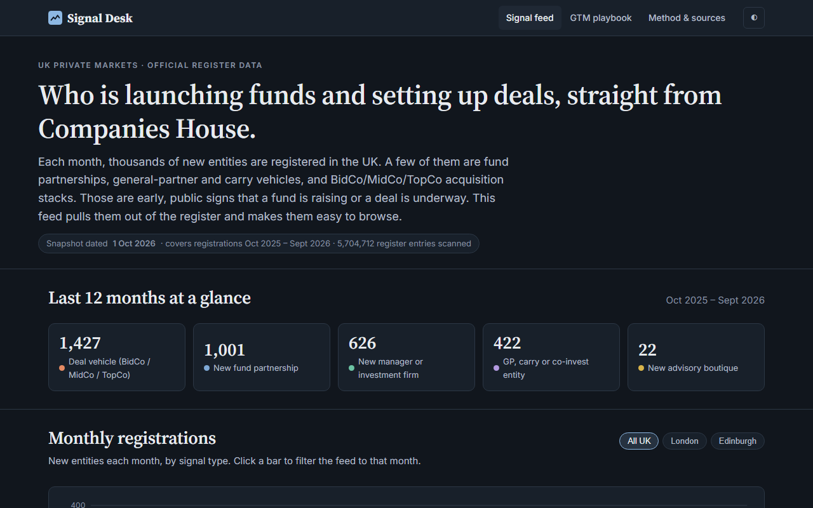

Signal Desk
A monthly feed of who is launching funds and setting up deals in the UK, pulled straight from the Companies House register.
- Scans 5.7M register entries and finds 3,498 fund partnerships, carry vehicles and BidCo/TopCo deal stacks in 12 months
- Groups them into 585 sponsor clusters, with an interactive monthly chart and a filterable feed
- Refreshes itself every month through a scheduled GitHub Action; ships with a full outbound playbook
AI in the build: designed the classification rules with Claude, then used Claude Code to write and test the data pipeline and site.
Node.js · GitHub Actions · open data · Vercel
View project ↗